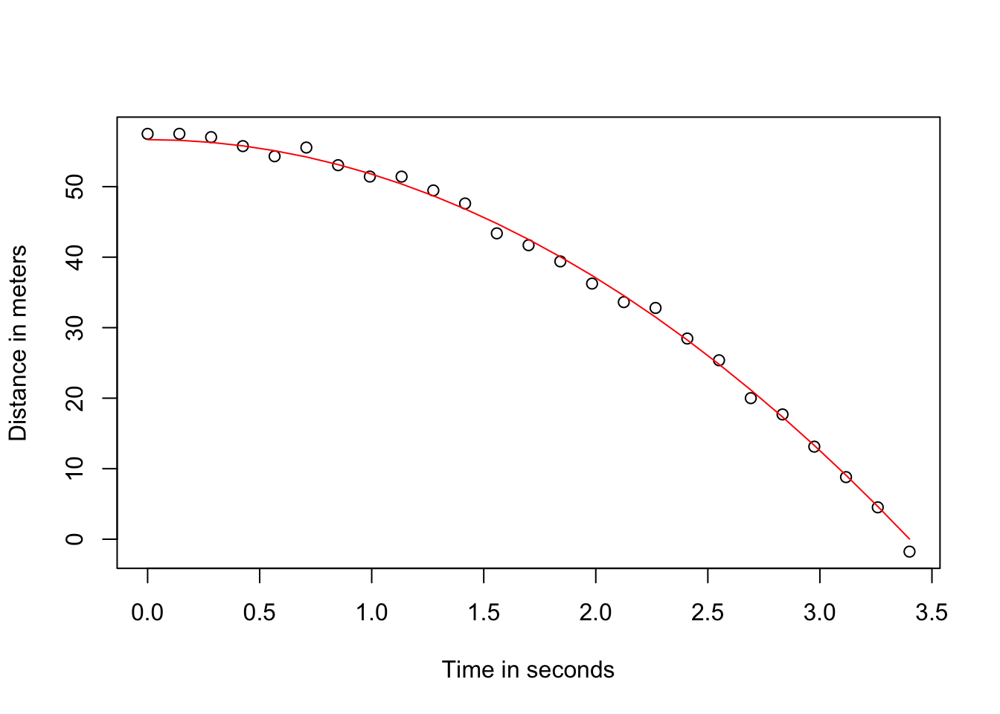

B Solutions ch. 3 - Linear models and matrix algebra
Solutions to exercises of chapter 3.
B.1 Example 2
We already know the equation that describes the data very well from high school physics.
\[d = h_0 + v_0 t - 0.5 \times 9.8 t^2\]
with \(h_0\) and \(v_0\) the starting height and velocity respectively. The data we simulated above followed this equation and added measurement error to simulate n observations for dropping the ball \((v_0=0)\) from from height \((h_0=56.67)\)
Here is what the data looks like with the solid line representing the true trajectory:
g <- 9.8 ##meters per second
n <- 25
tt <- seq(0,3.4,len=n) ##time in secs, t is a base function
f <- 56.67 - 0.5*g*tt^2
y <- f + rnorm(n,sd=1)
plot(tt,y,ylab="Distance in meters",xlab="Time in seconds")
lines(tt,f,col=2)
In R we can fit this model by simply using the lm function.
tt2 <-tt^2
fit <- lm(y~tt+tt2)
summary(fit)$coef## Estimate Std. Error t value Pr(>|t|)
## (Intercept) 57.0548046 0.5299866 107.6532936 1.901783e-31
## tt -0.5225936 0.7219535 -0.7238604 4.767787e-01
## tt2 -4.7952086 0.2050965 -23.3802560 4.978589e-17B.2 Example 2
data(father.son,package="UsingR")
x=father.son$fheight
y=father.son$sheight
X <- cbind(1,x)
thetahat <- solve( t(X) %*% X ) %*% t(X) %*% y
###or
thetahat <- solve( crossprod(X) ) %*% crossprod( X, y )We can see the results of this by computing the estimated \(\hat{\theta}_0+\hat{\theta}_1 x\) for any value of \(x\):
newx <- seq(min(x),max(x),len=100)
X <- cbind(1,newx)
fitted <- X%*%thetahat
plot(x,y,xlab="Father's height",ylab="Son's height")
lines(newx,fitted,col=2)
This \(\hat{\boldsymbol{\theta}}=(\mathbf{X}^\top \mathbf{X})^{-1} \mathbf{X}^\top \mathbf{Y}\) is one of the most widely used results in data analysis.